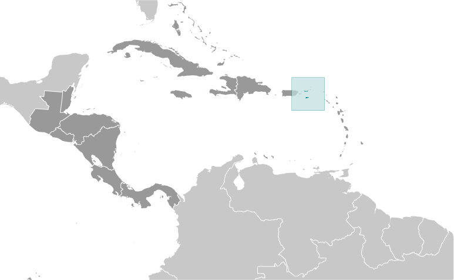
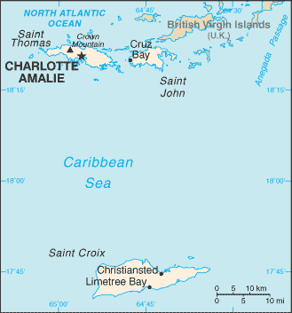
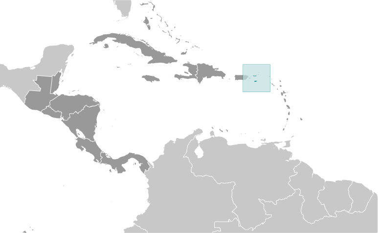
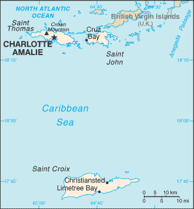

Central America and Caribbean :: VIRGIN ISLANDS
Introduction :: VIRGIN ISLANDS
-
The Danes secured control over the southern Virgin Islands of Saint Thomas, Saint John, and Saint Croix during the 17th and early 18th centuries. Sugarcane, produced by African slave labor, drove the islands' economy during the 18th and early 19th centuries. In 1917, the US purchased the Danish holdings, which had been in economic decline since the abolition of slavery in 1848. On 6 September 2017, Hurricane Irma passed over the northern Virgin Islands of Saint Thomas and Saint John and inflicted severe damage to structures, roads, the airport on Saint Thomas, communications, and electricity. Less than two weeks later, Hurricane Maria passed over the island of Saint Croix in the southern Virgin Islands inflicting considerable damage with heavy winds and flooding rains.
Geography :: VIRGIN ISLANDS
-
Caribbean, islands between the Caribbean Sea and the North Atlantic Ocean, east of Puerto Rico18 20 N, 64 50 WCentral America and the Caribbeantotal: 1,910 sq kmland: 346 sq kmwater: 1,564 sq kmcountry comparison to the world: 182twice the size of Washington, DC0 km188 kmterritorial sea: 12 nmexclusive economic zone: 200 nmsubtropical, tempered by easterly trade winds, relatively low humidity, little seasonal temperature variation; rainy season September to Novembermostly hilly to rugged and mountainous with little flat landmean elevation: NAelevation extremes: lowest point: Caribbean Sea 0 mhighest point: Crown Mountain 474 mpleasant climate, beaches foster tourismagricultural land: 11.5%arable land 2.9%; permanent crops 2.9%; permanent pasture 5.7%forest: 57.4%other: 31.1% (2011 est.)1 sq km (2012)while overall population density throughout the islands is relatively low, concentrations appear around Charlotte Amalie on St. Thomas and Christiansted on St. Croixseveral hurricanes in recent years; frequent and severe droughts and floods; occasional earthquakeslack of natural freshwater resourcesimportant location along the Anegada Passage - a key shipping lane for the Panama Canal; Saint Thomas has one of the best natural deepwater harbors in the Caribbean
People and Society :: VIRGIN ISLANDS
-
107,268 (July 2017 est.)country comparison to the world: 192noun: Virgin Islander(s) (US citizens)adjective: Virgin Islanderblack 76%, white 15.6%, Asian 1.4%, other 4.9%, mixed 2.1%note: 17.4% self-identify as latino (2010 est.)English 71.6%, Spanish or Spanish Creole 17.2%, French or French Creole 8.6%, other 2.5% (2010 est.)Protestant 59% (Baptist 42%, Episcopalian 17%), Roman Catholic 34%, other 7%0-14 years: 20.41% (male 11,220/female 10,671)15-24 years: 11.19% (male 5,853/female 6,154)25-54 years: 37.07% (male 18,587/female 21,182)55-64 years: 13.78% (male 6,967/female 7,812)65 years and over: 17.55% (male 8,618/female 10,204) (2017 est.)total dependency ratio: 60.8youth dependency ratio: 32.8elderly dependency ratio: 28potential support ratio: 3.6 (2015 est.)total: 41 yearsmale: 39.9 yearsfemale: 41.9 years (2017 est.)country comparison to the world: 5-0.25% (2017 est.)country comparison to the world: 21412.8 births/1,000 population (2017 est.)country comparison to the world: 1557.8 deaths/1,000 population (2017 est.)country comparison to the world: 99-7.5 migrant(s)/1,000 population (2017 est.)country comparison to the world: 205while overall population density throughout the islands is relatively low, concentrations appear around Charlotte Amalie on St. Thomas and Christiansted on St. Croixurban population: 95.6% of total population (2017)rate of urbanization: 0.08% annual rate of change (2015-20 est.)CHARLOTTE AMALIE (capital) 52,000 (2014)at birth: 1.06 male(s)/female0-14 years: 1.02 male(s)/female15-24 years: 0.82 male(s)/female25-54 years: 0.82 male(s)/female55-64 years: 0.93 male(s)/female65 years and over: 0.83 male(s)/femaletotal population: 0.87 male(s)/female (2016 est.)total: 7.9 deaths/1,000 live birthsmale: 9 deaths/1,000 live birthsfemale: 6.8 deaths/1,000 live births (2017 est.)country comparison to the world: 156total population: 79.4 yearsmale: 76.2 yearsfemale: 82.8 years (2017 est.)country comparison to the world: 492.08 children born/woman (2017 est.)country comparison to the world: 108improved:urban: 100% of populationrural: 100% of populationtotal: 100% of populationunimproved:urban: 0% of populationrural: 0% of populationtotal: 0% of population (2015 est.)improved:urban: 96.4% of populationrural: 96.4% of populationtotal: 96.4% of populationunimproved:urban: 3.6% of populationrural: 3.6% of populationtotal: 3.6% of population (2015 est.)NANANAnote: active local transmission of Zika virus by Aedes species mosquitoes has been identified in this country (as of August 2016); it poses an important risk (a large number of cases possible) among US citizens if bitten by an infective mosquito; other less common ways to get Zika are through sex, via blood transfusion, or during pregnancy, in which the pregnant woman passes Zika virus to her fetus (2016)
Government :: VIRGIN ISLANDS
-
conventional long form: United States Virgin Islandsconventional short form: Virgin Islandsformer: Danish West Indiesabbreviation: USVIetymology: the myriad islets, cays, and rocks surrounding the major islands reminded Christopher COLUMBUS in 1493 of Saint Ursula and her 11,000 virgin followers (Santa Ursula y las Once Mil Virgenes), which over time shortened to the Virgins (las Virgenes)organized, unincorporated territory of the US with policy relations between the Virgin Islands and the US under the jurisdiction of the Office of Insular Affairs, US Department of the Interiorpresidential democracy; a self-governing territory of the USname: Charlotte Amaliegeographic coordinates: 18 21 N, 64 56 Wtime difference: UTC-4 (1 hour ahead of Washington, DC, during Standard Time)none (territory of the US); there are no first-order administrative divisions as defined by the US Government, but there are 3 islands at the second order; Saint Croix, Saint John, Saint Thomasnone (territory of the US)Transfer Day (from Denmark to the US), 31 March (1917)22 July 1954 - the Revised Organic Act of the Virgin Islands functions as a constitution for this territory of the US; revised 1962, 2000 (2016)US common lawsee United States18 years of age; universal; note - island residents are US citizens but do not vote in US presidential electionschief of state: President Donald J. TRUMP (since 20 January 2017); Vice President Michael R. PENCE (since 20 January 2017)head of government: Governor Kenneth MAPP (since 5 January 2015), Lieutenant Governor Osbert POTTER (since 5 January 2015)cabinet: Territorial Cabinet appointed by the governor and confirmed by the Senateelections/appointments: president and vice president indirectly elected on the same ballot by an Electoral College of 'electors' chosen from each state; president and vice president serve a 4-year term (eligible for a second term); under the US Constitution, residents of the Virgin Islands do not vote in elections for US president and vice president; however, they may vote in the Democratic and Republican presidential primary elections; governor and lieutenant governor directly elected on the same ballot by absolute majority vote in 2 rounds if needed for a 4-year term (eligible for a second term); election last held on 4 November 2014 (next to be held in November 2018)election results: Kenneth MAPP elected governor; percent of vote in runoff - Kenneth MAPP (independent) 63.9%, Donna CHRISTIAN-CHRISTIANSEN (Democratic Party) 36.1%description: unicameral Senate (15 seats; members directly elected in single- and multi-seat constituencies by simple majority popular vote to serve 2-year terms)elections: last held on 8 November 2016 (next to be held on 6 November 2018)election results: percent of vote by party - NA; seats by party - Democratic Party 10, ICM 1, independent 4note: the Virgin Islands directly elects 1 member by simple majority vote to serve a 2-year term as a delegate to the US House of Representatives; the delegate can vote when serving on a committee and when the House meets as the Committee of the Whole House, but not when legislation is submitted for a “full floor” House vote; election of delegate last held on 8 November 2016 (next to be held on 6 November 2018)highest court(s): Supreme Court of the Virgin Islands (consists of the chief justice and 2 associate justices); note - court established by US Congress in 2004 and assumed appellate jurisdiction in 2007judge selection and term of office: justices appointed by the governor and confirmed by the Virgin Islands Senate; justices initially serve renewable 10-year terms; chief justice elected to position by peers for a 3-year termsubordinate courts: Superior Court (Territorial Court renamed in 2004); US Court of Appeals for the Third Circuit (has appellate jurisdiction over the District Court of the Virgin Islands; it is a territorial court and is not associated with a US federal judicial district); District Court of the Virgin IslandsDemocratic Party [Donna M. CHRISTENSEN]Independent Citizens' Movement or ICM [Dale BLYDEN]Republican Party [John CANEGATA]NAAOSIS (observer), Interpol (subbureau), IOC, UPU, WFTU (NGOs)none (territory of the US)none (territory of the US)white field with a modified US coat of arms in the center between the large blue initials V and I; the coat of arms shows a yellow eagle holding an olive branch in its right talon and three arrows in the left with a superimposed shield of seven red and six white vertical stripes below a blue panel; white is a symbol of purity, the letters stand for the Virgin Islandsname: "Virgin Islands March"lyrics/music: multiple/Alton Augustus ADAMS, Sr.note: adopted 1963; serves as a local anthem; as a territory of the US, "The Star-Spangled Banner" is official (see United States)
Economy :: VIRGIN ISLANDS
-
Tourism, trade, and other services are the primary economic activities, accounting for nearly 60% of the Virgin Island's GDP and about half of total civilian employment. The islands host nearly 3 million tourists per year, mostly from visiting cruise ships. The islands are vulnerable to damage from storms. The agriculture sector is small, with most food being imported. Industry and government each account for about one-fifth of GDP. The manufacturing sector consists of rum distilling, electronics, pharmaceuticals, and watch assembly. A refinery on St. Croix, one of the world’s largest, processed 350,000 barrels of crude oil a day until it was shut down in February 2012, after operating for 45 years.Federal programs and grants, totaling $241.4 million in 2013, contributed 19.7% of the territory’s total revenues. The economy declined in 2013, due to decreases in exports resulting from the loss of refined oil products. Nevertheless, the economy remains relatively diversified. Along with a vibrant tourism industry, rum exports, trade, and services will be major income sources in future years.$3.792 billion (2013 est.)$4.143 billion (2012 est.)$4.288 billion (2011 est.)note: data are in 2013 dollarscountry comparison to the world: 178$5.075 billion (2013)-5.4% (2013 est.)-13.8% (2012 est.)-7.5% (2011 est.)country comparison to the world: 215$36,100 (2013 est.)$39,300 (2012 est.)$40,500 (2011 est.)country comparison to the world: 53household consumption: 63.6%government consumption: 28%investment in fixed assets: 6.1%investment in inventories: NA%exports of goods and services: 69.3%imports of goods and services: -66.9% (2013)agriculture: 2%industry: 20%services: 78% (2012 est.)fruit, vegetables, sorghum; Senepol cattletourism, watch assembly, rum distilling, construction, pharmaceuticals, electronicsNA%50,580 (2012 est.)country comparison to the world: 194agriculture: 1%industry: 19%services: 80% (2003 est.)13% (2014)country comparison to the world: 15728.9% (2002 est.)lowest 10%: NA%highest 10%: NA%revenues: $1.223 billionexpenditures: $1.551 billion (2013)24.1% of GDP (2013)country comparison to the world: 122-6.5% of GDP (2013)country comparison to the world: 17645.9% of GDP (2014)country comparison to the world: 1121 October - 30 September3.1% (2012)country comparison to the world: 145$2.627 billion (2013)$3.339 billion (2012)country comparison to the world: 130rum$2.694 billion (2013)$3.056 billion (2012)country comparison to the world: 147foodstuffs, consumer goods, building materials$NAthe US dollar is used
Energy :: VIRGIN ISLANDS
-
population without electricity: 10,295electrification - total population: 91%electrification - urban areas: 91%electrification - rural areas: 80% (2012)679 million kWh (2015 est.)country comparison to the world: 159117.2 million kWh (2015 est.)country comparison to the world: 1990 kWh (2016 est.)country comparison to the world: 2140 kWh (2016 est.)country comparison to the world: 217316,000 kW (2015 est.)country comparison to the world: 15513.9% of total installed capacity (2015 est.)country comparison to the world: 1990% of total installed capacity (2015 est.)country comparison to the world: 2070% of total installed capacity (2015 est.)country comparison to the world: 2121.3% of total installed capacity (2015 est.)country comparison to the world: 1330 bbl/day (2016 est.)country comparison to the world: 2100 bbl/day (2014 est.)country comparison to the world: 2090 bbl/day (2014 est.)country comparison to the world: 2090 bbl (1 January 2017 es)country comparison to the world: 2100 bbl/day (2014 est.)country comparison to the world: 211132,000 bbl/day (2015 est.)country comparison to the world: 750 bbl/day (2014 est.)country comparison to the world: 212130,000 bbl/day (2014 est.)country comparison to the world: 510 cu m (2014 est.)country comparison to the world: 2100 cu m (2014 est.)country comparison to the world: 1450 cu m (2014 est.)country comparison to the world: 2080 cu m (2014 est.)country comparison to the world: 2070 cu m (1 January 2014 es)country comparison to the world: 2069.4 million Mt (2013 est.)country comparison to the world: 105
Communications :: VIRGIN ISLANDS
-
total subscriptions: 76,000subscriptions per 100 inhabitants: 73 (July 2016 est.)country comparison to the world: 149general assessment: modern system with total digital switching, uses fiber-optic cable and microwave radio relaydomestic: full range of services availableinternational: country code - 1-340; submarine cable connections to US, the Caribbean, Central and South America; satellite earth stations - NA (2016)about a dozen TV broadcast stations including 1 public TV station; multi-channel cable and satellite TV services are available; 24 radio stations (2009).vitotal: 57,000percent of population: 54.8% (July 2016 est.)country comparison to the world: 195
Transportation :: VIRGIN ISLANDS
-
2 (2013)country comparison to the world: 207total: 2over 3,047 m: 11,524 to 2,437 m: 1 (2013)total: 1,260 km (2008)country comparison to the world: 181major seaport(s): Charlotte Amalie, Christiansted, Cruz Bay, Frederiksted, Limetree Bay
Military and Security :: VIRGIN ISLANDS
-
defense is the responsibility of the US
Transnational Issues :: VIRGIN ISLANDS
-
none